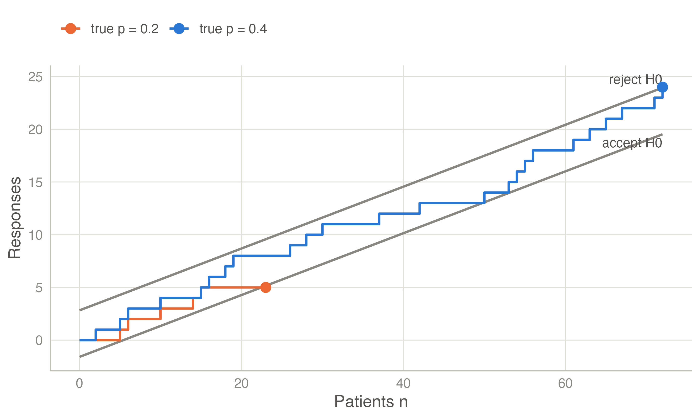
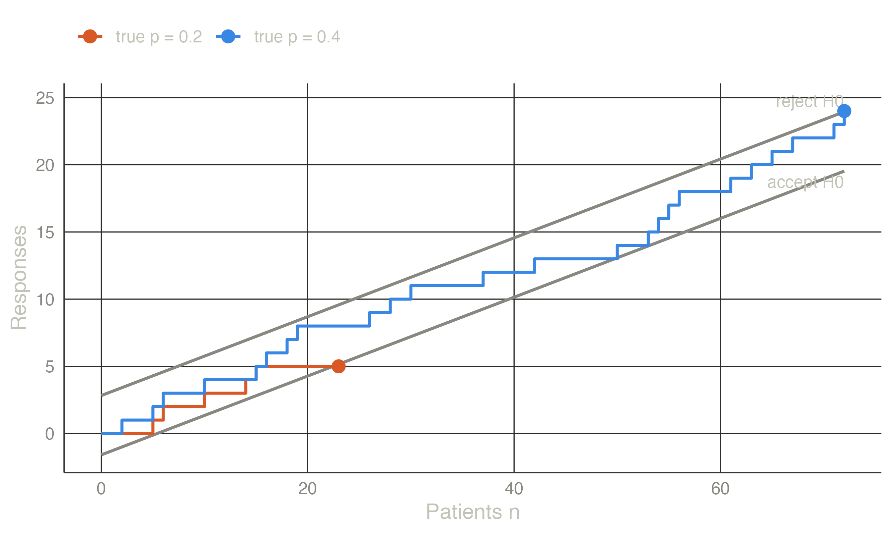
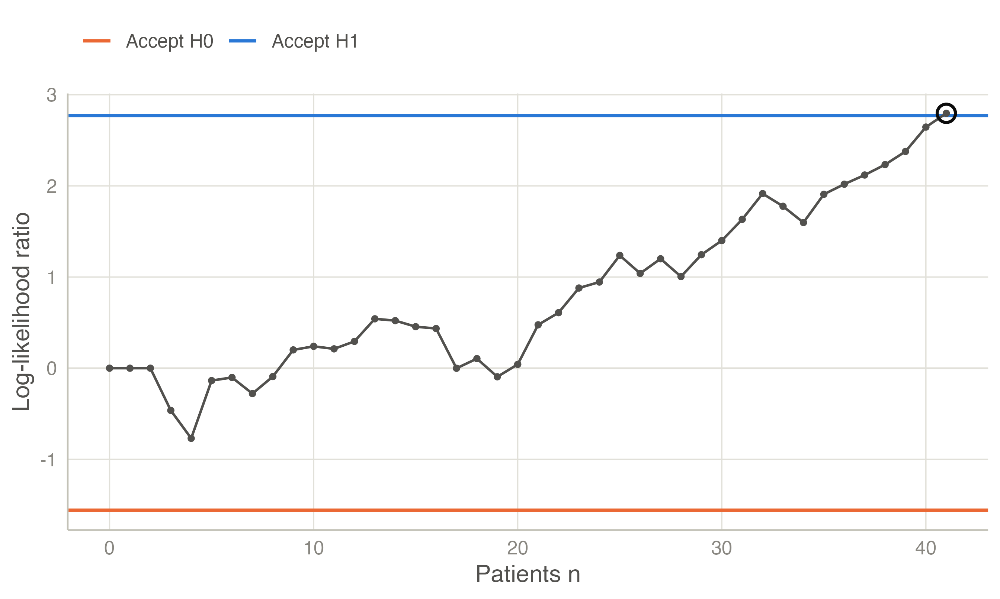
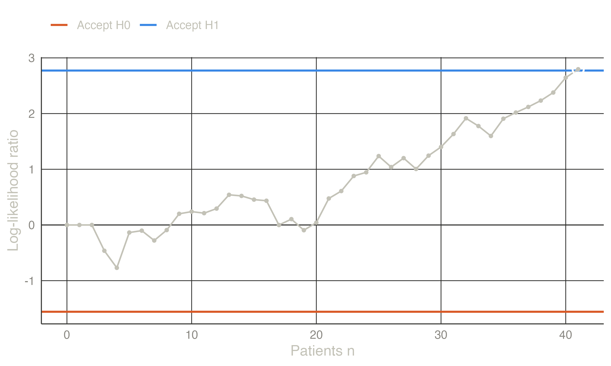

Group sequential designs look a few times. The sequential probability ratio test (SPRT) of Wald (1945) looks after every observation. It compares two simple hypotheses, \(H_0\!: \theta = \theta_0\) and \(H_1\!: \theta = \theta_1\), through the cumulative log-likelihood ratio
\[ \Lambda_n = \sum_{i=1}^{n} \log \frac{f(x_i \mid \theta_1)}{f(x_i \mid \theta_0)} . \]
Sampling continues while \(\log B < \Lambda_n < \log A\). The test accepts \(H_1\) when \(\Lambda_n \ge \log A\) and accepts \(H_0\) when \(\Lambda_n \le \log B\). Wald’s approximations
\[ A \approx \frac{1-\beta}{\alpha}, \qquad B \approx \frac{\beta}{1-\alpha} \]
give error rates slightly below the targets, because they ignore the overshoot of the boundary. Among all tests with the same error rates, the SPRT has the smallest expected sample size at both \(\theta_0\) and \(\theta_1\). The expected sample size is approximately
\[ E_\theta[N] \approx \frac{L(\theta)\log B + \{1 - L(\theta)\}\log A}{E_\theta[z]}, \]
where \(L(\theta)\) is the probability of accepting \(H_0\) and \(z\) is the log-likelihood ratio of a single observation (Wald 1947).
Single-arm study of a response rate: \(H_0\!: p = 0.2\) against \(H_1\!: p = 0.4\), \(\alpha = 0.05\), \(\beta = 0.2\). With \(S_n\) responses among \(n\) patients, \(\Lambda_n\) is linear in \(S_n\). The boundaries are therefore two parallel lines in the \((n, S_n)\) plane.
Reject \(H_0\) when \(S_n \ge 2.827 + 0.293\,n\); accept it when \(S_n \le -1.589 + 0.293\,n\). Wald’s approximations give an expected sample size of about 15 patients if \(p = 0.2\) and 18 if \(p = 0.4\). A fixed-sample test with the same errors needs about 29.


Exact operating characteristics. For binomial data the SPRT can be evaluated exactly, by following the distribution of \(S_n\) from patient to patient and removing the paths that cross a line. The Sequential Probability Ratio Test analysis reports both sets of numbers:
| True p | P(accept H1) | Expected n | Wald P(accept H1) | Wald expected n |
|---|---|---|---|---|
| 0.200 | 0.040 | 16.501 | 0.050 | 14.660 |
| 0.300 | 0.395 | 26.084 | 0.393 | 21.823 |
| 0.400 | 0.824 | 21.120 | 0.800 | 18.217 |
| 0.500 | 0.961 | 14.135 | 0.950 | 12.600 |
The exact type I error is 0.040, below the nominal 0.05, and the exact expected sample sizes are 12–20 % larger than Wald’s: both are effects of the overshoot, which is large when each observation moves \(\Lambda_n\) by a big step. The numbers agree with gsDesign::binomialSPRT to seven decimals.
The SPRT has no maximum sample size: under intermediate values of \(\theta\) it can run for a long time. Truncated SPRTs stop at a maximum \(N\) and decide there. Armitage (1957) proposed restricted procedures with a guaranteed maximum. The triangular test is the best-known closed alternative: its lines converge, so it always ends.
Truncating the binomial SPRT above at \(N = 60\) changes little, because few paths are still open at 60 patients. If the test rejects \(H_0\) at \(N\) whenever \(\Lambda_N > 0\), the type I error becomes 0.046. If it rejects \(H_0\) only at the upper line, the type I error is 0.039, the power drops to 0.801, and the expected sample size under \(H_0\) is 16.3. The continuous triangular test for the same hypotheses always stops by \(n = 58\). Its boundaries are approximations for data observed one at a time: here the exact type I error is 0.061 and the power 0.873. The exact values should be checked before such a design is used.
For normal data with unknown variance, the likelihood ratio of the \(t\) statistic under \(\delta = \delta_1\) against \(\delta = 0\) (a ratio of noncentral and central \(t\) densities) plays the role of \(\Lambda_n\). This gives the one-sample sequential t-test of Rushton (1950) and the two-sample test of Hajnal (1961). Psychology has rediscovered the approach as the “SPRT t-test” (Schnuerch and Erdfelder 2020), extended it to ANOVA (Steinhilber et al. 2024), and compared it with sequential Bayes factors (Stefan et al. 2022). Lakens (2014) discusses sequential analysis for experimental research more generally.
A two-arm study plans to test a standardised effect \(d = 0.5\) with a one-sided \(\alpha = 0.05\) and power 80 %, and the SD is unknown. A fixed-sample t-test needs about 99 patients in total (normal approximation). The sequential t-test evaluates its likelihood ratio after every patient. Its operating characteristics come from simulation:
| True d | P(accept H1) | Expected n (total) |
|---|---|---|
| 0.000 | 0.052 | 48.170 |
| 0.250 | 0.374 | 81.150 |
| 0.500 | 0.832 | 69.594 |
| 0.750 | 0.968 | 46.372 |
On average the sequential test needs 49 % of the fixed sample size under \(H_0\) and 70 % under \(H_1\). The price is a random sample size, which is larger than the fixed design’s in some trials.
The dataset Sequential outcomes (shipped with the module) contains 80 patients in arrival order. The true difference in the score is 0.6. The test accepts \(H_1\) after 41 patients, with an estimated difference of 0.77. Estimates at the stopping time are biased away from \(H_0\): a path that crosses the upper line early tends to overestimate the effect.


Sequential → Sequential Probability Ratio Test (version 0.3.0).
The design summary and the Operating characteristics table give Table 2: type I error 0.052, power 0.832, and a fixed-sample n of 99. The Sequential test table accepts H1 after 41 patients, with an estimated difference of 0.771. The Boundaries plot, further down, is Figure 2.